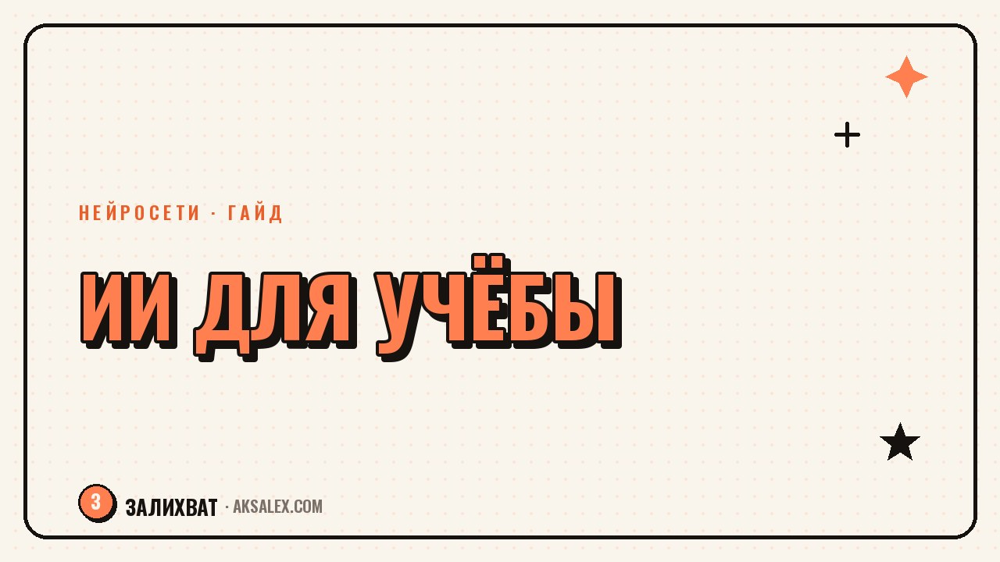

Бесплатные нейросети для учёбы: подборка для школы и вуза

Когда готовишься к экзамену или пишешь работу, хочется не тонуть в учебнике, а быстро разобраться в теме и двигаться дальше. Бесплатные нейросети для учёбы в этом неплохо помогают - если понимать, для какой задачи какую брать и где они обязательно наврут. Разбираем по полочкам: что реально работает бесплатно, какие лимиты у каждого сервиса и как не попасться на красиво оформленную ерунду.
Зачем вообще нейросеть, если есть учебник и поисковик
Учебник даёт системное знание, но не отвечает на твой конкретный вопрос в твоих словах. Поисковик выдаёт десять ссылок, в которых нужно самому разбираться. Нейросеть - это промежуточное звено: ты объясняешь, что не понял, и получаешь ответ на человеческом языке, с примерами и в том объёме, который нужен именно тебе.
Это не замена учёбе, а ускоритель. Если тему совсем не знаешь, нейросеть поможет построить первую карту понятий - что с чем связано, какие термины важны. А дальше ты уже идёшь в учебник или к преподавателю с конкретными вопросами, а не с чистым листом.
Нейросеть хороша там, где нужно быстро сориентироваться. Она плоха там, где нужна точность цифр, дат и цитат - там она может уверенно выдумать несуществующий факт.
Чаты с ИИ: разобраться в теме и получить объяснение по-человечески
Самый универсальный инструмент - чат-боты на основе больших языковых моделей. Им можно скинуть параграф из учебника и попросить объяснить проще, попросить разбить сложную тему на пункты или привести аналогию из жизни. Бесплатных тарифов у крупных чатов хватает, чтобы закрыть большинство учебных задач.
Как формулировать запрос, чтобы получить пользу, а не воду
- Указывай уровень: «объясни как для 8 класса» или «как для первого курса вуза» - ответ будет сильно отличаться.
- Проси структуру: «разбей на 3-4 пункта с примером к каждому» - так проще запомнить.
- Прикладывай свой кусок текста и проси объяснить именно его, а не тему в общем.
- Проси проверить себя: «задай мне 5 вопросов по этой теме» - так заметишь пробелы.
Отдельно полезна функция «объясни решение задачи по шагам». Для точных наук это работает лучше, чем запрос на готовый ответ: ты видишь логику, а не результат, который можно переписать не думая.
Нейросети для конспектов, пересказов и подготовки к экзамену
Отдельный класс задач - не разобраться в новой теме, а быстро обработать объём: лекцию на полтора часа, длинную статью или главу учебника. Здесь выручают сервисы, которые умеют сжимать текст или аудио в конспект с ключевыми тезисами.
- Транскрибация лекции в текст, если преподаватель разрешает запись.
- Сжатие длинной статьи в тезисы с цитатами для цитирования.
- Генерация карточек для повторения - вопрос с одной стороны, ответ с другой.
- Составление плана ответа на экзаменационный билет из разрозненных заметок.
Конспект от нейросети - это черновик, а не готовый продукт. Всегда сверяй ключевые цифры, даты и имена с первоисточником: именно в них модель чаще всего ошибается, особенно если тема узкая или малоизвестная.
Где нейросеть обязательно наврёт и как это проверить
Самая частая ловушка - запрос на точные факты: даты, цифры, цитаты, ссылки на исследования. Модель может уверенно назвать несуществующую книгу или приписать цитату не тому автору - и звучать это будет абсолютно убедительно.
Простое правило проверки
Если в ответе есть конкретная цифра, дата, имя автора или название источника - проверь это отдельно в поисковике или учебнике. Общие объяснения понятий модель даёт достаточно надёжно, а вот частные факты - под вопросом.
- Не копируй цитаты из ответа нейросети без проверки первоисточника.
- Не доверяй названным книгам и статьям, пока не нашёл их сам.
- Для математики и физики проси показать решение по шагам, а не только ответ.
- Сверяй термины по глоссарию учебника - формулировки могут незаметно отличаться.
Сравнение подходов: что выбрать под конкретную задачу
Разные учебные задачи требуют разных инструментов. Ниже - ориентир, с чего начинать в зависимости от того, что тебе нужно именно сейчас.
| Задача | Что подойдёт | На что смотреть |
|---|---|---|
| Разобраться в новой теме | Чат с ИИ, объяснение по уровням | Проси примеры и аналогии, а не только определения |
| Законспектировать лекцию | Сервис транскрибации и сжатия текста | Проверяй цифры и термины вручную |
| Подготовиться к экзамену | Генератор карточек для повторения | Делай карточки сам по своим конспектам, не только по чужим |
| Проверить решение задачи | Чат с разбором по шагам | Сверяй логику, а не только финальный ответ |
| Написать черновик работы | Чат как помощник со структурой | Переписывай своими словами, итог должен быть твоим |
Как не превратить помощника в костыль
Главный риск бесплатных нейросетей для учёбы - не ошибки в фактах, а привычка не думать самому. Если каждую задачу сразу отдавать модели, навык решать и формулировать своими словами просядет, а на экзамене подсказчика рядом не будет.
Рабочий баланс - сначала попробовать разобраться самому, потом свериться с нейросетью, а не наоборот. Так ты и экономишь время, и тренируешь собственное понимание темы, которое никуда не делегируешь.
Частые вопросы
Какие нейросети для учёбы бесплатные без ВПН
Выбор зависит от страны и сервиса, список доступности меняется, поэтому дать точный актуальный перечень без проверки на момент чтения нельзя. Проверяй доступность конкретного сервиса на сегодняшний день - это быстрее, чем ориентироваться на устаревший список.
Можно ли писать курсовую с помощью нейросети
Можно использовать её как помощника для структуры, объяснения источников и черновика отдельных частей, но итоговый текст должен быть переработан своими словами. Вуз проверяет и на уникальность, и на понимание темы на защите, поэтому чистая копипаста ответа - плохая идея.
Какая нейросеть лучше объясняет сложные темы
Лучше работает не конкретный сервис, а правильная постановка вопроса: с указанием уровня и просьбой привести пример. Попробуй задать один и тот же вопрос в двух-трёх чатах и сравнить, какой ответ понятнее именно тебе.
Как проверить, что нейросеть не наврала в ответе
Сверяй конкретные цифры, даты, имена и цитаты с учебником или поисковиком - это места, где модели ошибаются чаще всего. Общие объяснения понятий обычно надёжнее частных фактов.
Заменит ли нейросеть репетитора
Нет, нейросеть не видит твои конкретные пробелы в динамике и не подстраивает программу под тебя так, как живой репетитор. Она хороша как дополнение между занятиями, а не как полная замена системной подготовки.
Раз тема оказалась полезной, вот что почитать следующим. Нейросети для генерации видео блогеру: что они умеют, сколько стоят и где реально экономят время на контенте.
Читать статью →а не вручную